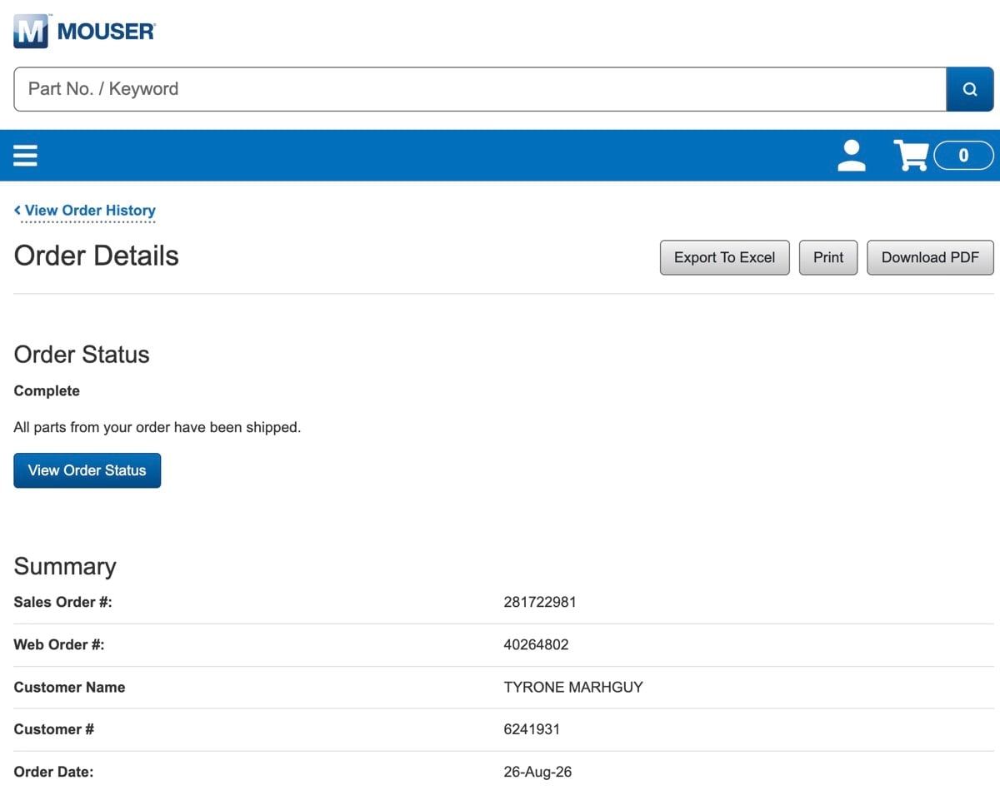
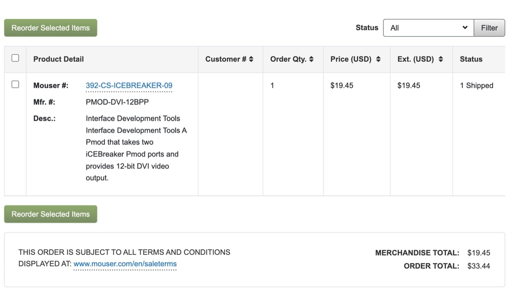

Dispatch · FPGA
The PMOD pivot
VGA through a pile of adapters would not light. Order a PMOD. Drive pixels on pins that are not the dedicated VGA bank.
I tried connecting VGA to a PC monitor. The chain of adapters between the FPGA and HDMI — a VGA‑to‑HDMI converter among them — seems passive. It would not work, no matter how many times I flashed a basic test pattern.
Time is short and the work needs to move. So: a PMOD, currently in transit. The FPGA can generate the VGA signal itself on pins other than the dedicated VGA ones.


I would love to chase the VGA issue properly. Strategically it can wait. A CPU without a display is a complex heater whose work stays abstract even to its builder.
When the PMOD arrives I will test the basic signals, then get the Tomato board running. I cannot wait to demonstrate basic programs on this custom architecture — a feat I have been looking forward to for a long time.
Related: display dispatch · driving the datapath · lot 08_display.